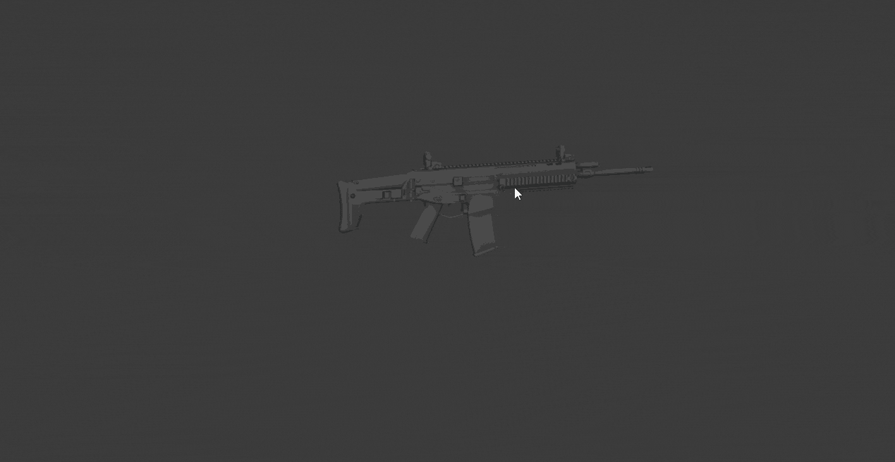
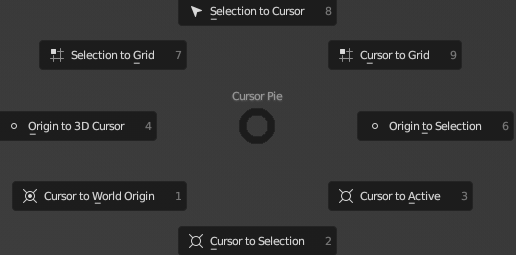
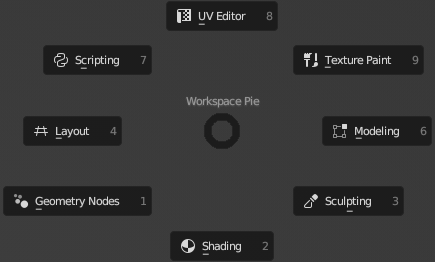
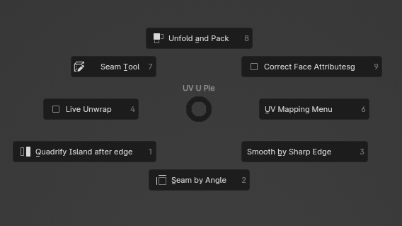
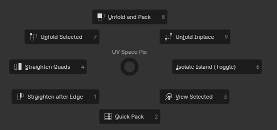
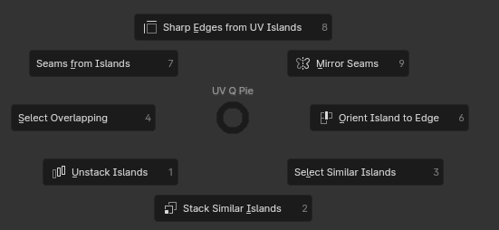

Pie Menus
Quick pies for the things you do all the time. Tap the key and click an item, or hold the key, flick toward the item and release.
Add Objects Pie
Shift Alt AObject & Edit ModePreference: Add Objects Pie
Add primitives with sizes that fit the view. With Relative Scale, a new object is scaled to the current zoom level, so it is never too big or too small.
Items: Plane, Cube, Cylinder, UV Sphere, Quad Sphere, Circle, Mod Cylinder (a cylinder built with modifiers) and a configurable top-right slot.
Settings
- Shortcut: the pie is on Shift Alt A by default. One click in the settings (or in the Rebind tab) moves it to Shift A and back.
- Relative Scale, Screen Size, Min Size: control the view-relative size. Size is used when Relative Scale is off.
- Top Right Option: Other (Blender's full Add menu), Empty, Monkey or .blend. .blend appends objects by name from a file of your choice; separate several names with commas.

Add Modifier Pie
Shift QOff by defaultPreference: Add Modifier Pie
Common modifiers in one pie. Array, Solidify and Bevel open the interactive Fast Array, Fast Solidify and Fast Bevel tools.
| Direction | Item |
|---|---|
| Left · Right · Bottom | Fast Array · Fast Solidify · Fast Bevel |
| Top | Weighted Normal |
| Top left · Top right | Lattice · Weld |
| Bottom left · Bottom right | Triangulate · Shrinkwrap |
Cursor Pie
Shift SPreference: Cursor Pie
Replaces Blender's snap pie with a more useful layout, including setting the origin.
| Direction | Item |
|---|---|
| Left · Right | Origin to 3D Cursor · Origin to Selection (works in Edit Mode too) |
| Bottom · Top | Cursor to Selection · Selection to Cursor |
| Top left · Top right | Selection to Grid · Cursor to Grid |
| Bottom left · Bottom right | Cursor to World Origin · Cursor to Active |

Flatten Pie
Alt 3Edit ModeNewPreference: Flatten Pie
Flattens the selection as seen from the current view: Left, Right, Top or Bottom. Vertices line up on the outermost selected point in that direction. For example, Left lines everything up with the leftmost vertex.
Workspace Pie
Shift \Off by defaultPreference: Workspace Pie
Switch workspaces: Layout, Modeling, Shading, UV Editing, Scripting, Texture Paint, Geometry Nodes and Sculpting. The key is \, which is the § key on Nordic keyboards. Change it in the Keymaps tab.

View Camera Pie
SpaceRebind tabMoves Blender's View pie (normally on `) to Space, and Play Animation to Shift Space. Turn it on in the Rebind tab and reset it there. This changes your Blender keymap, not just the add-on's.

Utility Pie
UExperimental · WIPPreference: Utility Pie. Visible only when Experimental is on.
Mesh and UV helpers in Object and Edit Mode: Live Unwrap, the UV Mapping menu, Seam by Angle, Unfold and Pack, Correct Face Attributes, Make Single User and Auto Merge.

UV Pies
Space · QUV EditorExperimental · WIPPreference: UV Pies. Visible only when Experimental is on.
- Space: Straighten Quads, Isolate Island, Quick Pack, Unwrap in Place, Unwrap and Pack, Unwrap Selected, Straighten after Edge, View Selected.
- Q: Select Overlapping, Orient Island to Edge, Stack Similar Islands, Sharp Edges from UV Islands, Seams from Islands, Mirror Selected Seams, Select Similar Islands.

